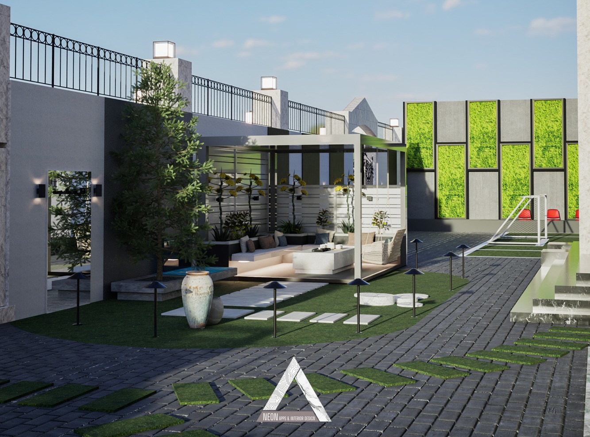
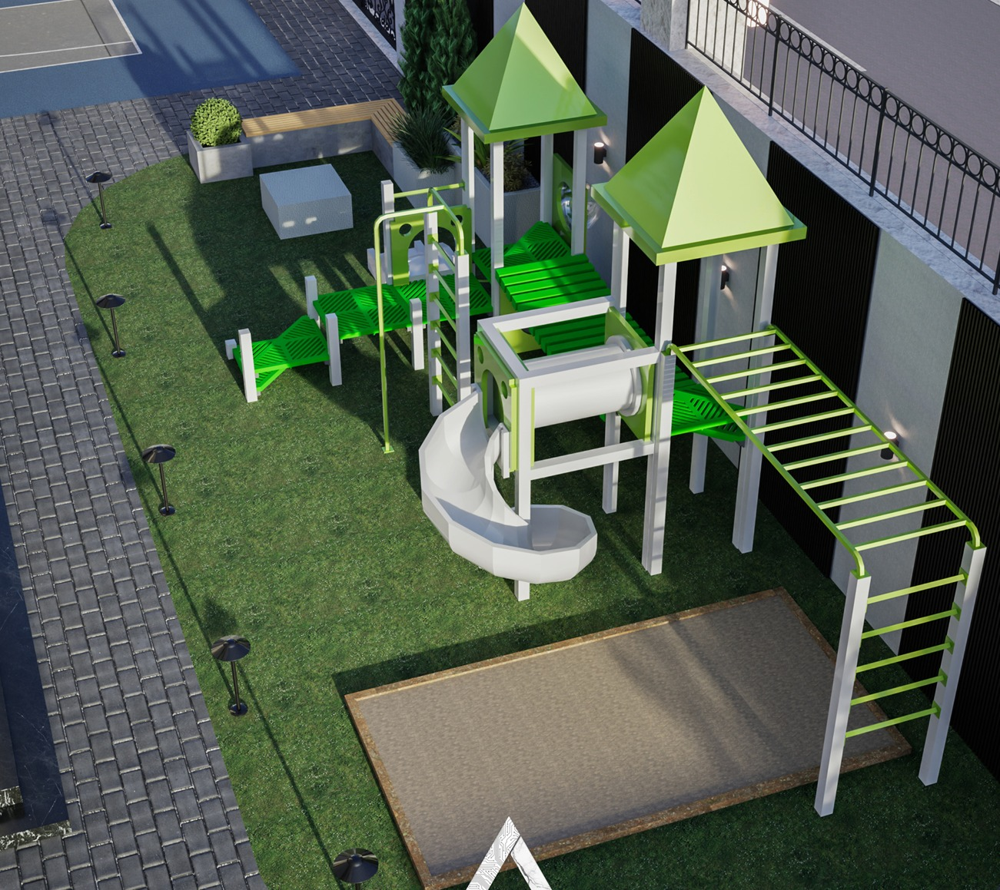
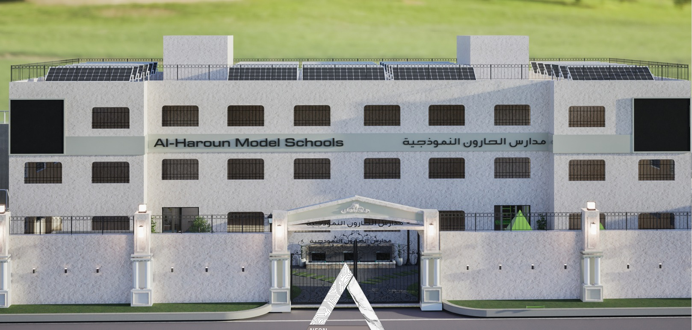
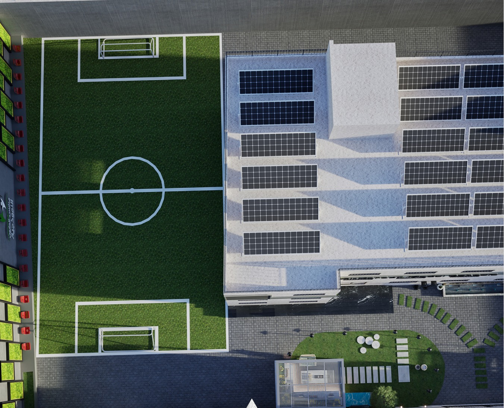
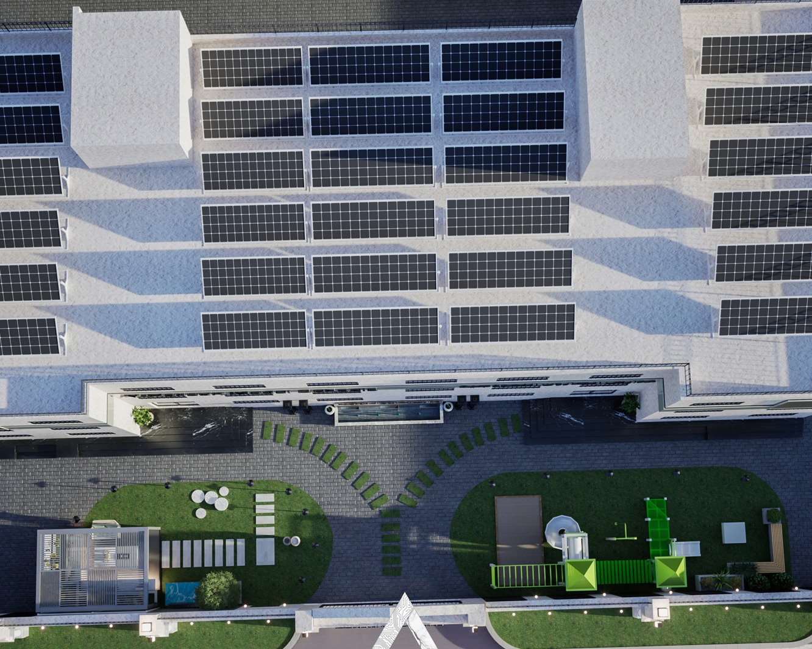

صور المدرسة





الرؤية والرسالة
أن تكون مدارس أرض النشامى نموذجًا للتفوق الأكاديمي والإنساني...
الرسالة: تقديم تعليم نوعي وحديث يجمع بين المعارف الأكاديمية والمهارات الحياتية ضمن بيئة آمنة وداعمة.
المناهج الدراسية
تعتمد المدرسة المنهاج الأردني المطوّر لجميع المراحل...
الأنشطة والخدمات المساندة
نوادٍ علمية وأدبية وفنية ورياضية...
لماذا مدارس أرض النشامى؟
✅ كادر تدريسي متميز وخبرات طويلة.
✅ بيئة تعليمية حديثة وتكنولوجيا مدمجة في الصفوف.
✅ التزام بالقيم الوطنية والتربوية.
✅ متابعة أكاديمية فردية لكل طالب لضمان التقدم المستمر.